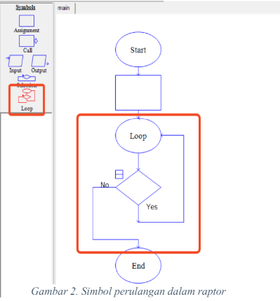
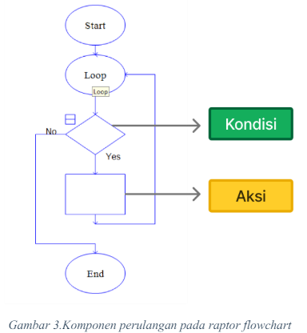
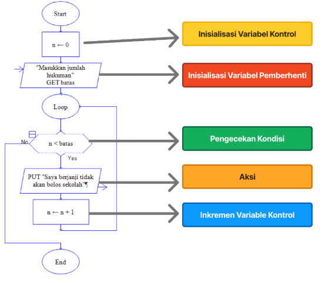
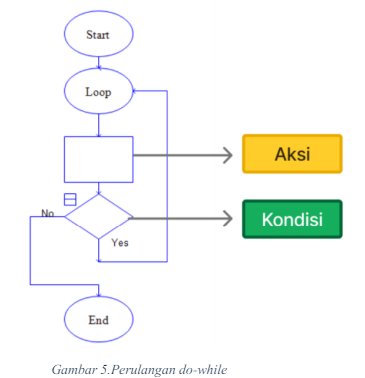
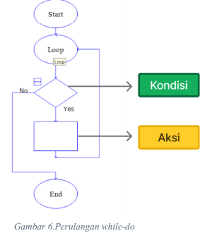
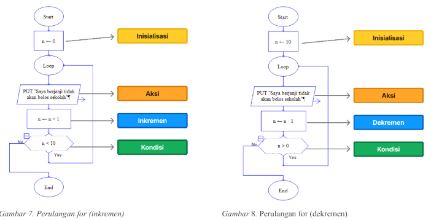
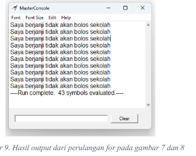

19-06-2024
120k Suka

Pada Modul kali ini kita akan membahas jenis & konsep perulangan dalam Flowchart, seperti bias akita masih akan menggunakan aplikasi RAPTOR sebagai media untuk memahami konsep perulangan.
Contoh perulangan dalam kehidupan sehari-hari dapat kita lihat dari aktifitas kita seperti bangun tidur, olahraga, makan, dan lain sebagainya. Lebih lanjutnya seperti kita pada saat mandi pasti selalu menggunakan sabun dan alat pembersih lainnya kemudian kita membilas sisa-sisa dari alat pembersih yang digunakan, nah kegiatan mandi ini selalu kita lakukan setiap hari mau itu pada saat bangun tidur, ataupun setelah melakukan aktifitas yang melelahkan. Dalam pemrograman, Perulangan merupakan salah satu konsep pemrograman yang memungkinkan kita untuk mengulang suatu intruksi/aksi/tindakan sesuai dengan kondisi yang telah ditentukan.
• Simbol 
• Komponen 
•> KondisiPada Kondisi Pengecekan dilakukan untuk menentukan apakah hasil bernilai true/Yes atau false/No. Jika hasilnya true/Yes, perulangan terus dilakukan. Jika hasilnya false/No, perulangan berhenti.
•> AksiSelama kondisi perulangan bernilai true/Yes, aksi dilakukan saat program memasuki perulangan. Aksi dapat ditempatkan sebelum atau sesudah kondisi, tergantung jenis perulangan.
• Struktur 
•> Variabel KontrolVariabel ini mengelola perulangan dengan mengecek kondisi benar atau salah pada setiap putaran. Inisialisasi diperlukan untuk memulai perulangan.
•> InisialisasiMenentukan nilai awal variabel. Untuk ilustrasi, variabel kontrol (n) diberikan nilai awal 0.
• Nilai Variabel PemberhentiVariabel ini meminta nilai input untuk menghitung jumlah perulangan. Sebagai ilustrasi, variabel "batas".
• Pengecekan KondisiIni bertujuan untuk memastikan bahwa variabel kontrol (n) lebih kecil dari variabel pemberhenti atau batas. Jika nilainya benar/ya, tindakan dilakukan dan variabel kontrol diinkremen; jika nilainya salah/tidak, program dihentikan.
• Variabel Kontrol Inkremen/DekremenAnda dapat menambah atau mengurangi variabel kontrol sesuai kebutuhan perulangan. Sebagai contoh bila mengggunakan inkremen, maka akan dilakukan penambahan variable kontrol (n = n+1) dan sebaliknya jika melakukan dekremen, maka dilakukan pengurangan variable kontrol(n = n-1).
• Do-While (Aksi - Kondisi)  Jenis Perulangan ini menjalankan aksi terlebih dahulu sebelum pengecekkan kondisi. Jika kondisi bernilai benar (True/Yes),maka perulangan akan dieksekusi lagi hingga kondisi bernilai salah (False/No). Contoh do-while dalam kehidupan sehari-hari adalah mencuci alat makanan: gosok alat seperti piring dengan sabun (aksi), lalu cek kebersihan (kondisi). Jika belum bersih/masih ada noda pada piring, ulangi aksi. Hingga sudah bersih, dan kemudian berhenti.
• While-Do (Kondisi - Aksi)  Jenis Perulangan ini memeriksa kondisi terlebih dahulu sebelum menjalankan aksi. Jika kondisi bernilai benar (True/Yes), perulangan dimulai dan aksi dilakukan. Jika kondisi bernilai salah (False/No), perulangan tidak terjadi/tidak akan dilakukan. Contoh penerapan while-do dalam kehidupan nyata adalah mencari buku di perpustakaan. Jika belum menemukan buku yang di cari (kondisi), kalian akan terus mencari di rak rak buku yang ada di sekitar perpustakaan (aksi) hingga setelah menemukannya, kalian akan mengambil buku yang diinginkan dan berhenti mencari buku yang lain.
• For Loop (Perulangan For)  Perulangan ini menjalankan aksi sesuai jumlah perulangan yang ditentukan sebelumnya. Variabel kontrol harus diinisialisasi dan menggunakan inkremen/dekremen. Inkremen/dekremen harus ada dalam perulangan for untuk mencegah infinite loop (perulangan tanpa henti). Kemudian atur kondisi berhenti di kondisi.
Contoh perulangan: Seorang siswa diberi hukuman kemudian dihukum menulis "Saya berjanji tidak akan bolos sekolah" sebanyak 10 kali.pertama inialisasi dulu Variabel kontrol (n) dimulai dari 0, cetak kalimat, dan kemudian lakukan operasi inkremen (n = n+1). Setelah itu cek apakah n kurang dari 10. Jika True/Yes, perulangan akan Kembali berjalan, jika False/No, maka perulangan akan berhenti.
Dalam gambar yang berbeda, inisialisasi variabel kontrol (n) dimulai pada 10. Dilanjutkan aksi dijalankan dengan mencetak kalimat dan kemudian dilanjutkan operasi dekremen (n = n-1). Setelah itu variable (n) di cek apakah n lebih dari 0 jika True/Yes, perulangan akan kembali berjalan, jika False/No, maka perulangan akan berhenti.
*(Perlu diingat tidak ada perbedaan hasil pada cara yang dilakukan, hanya saja bagaimana pengoperasian yang dilakukan saja inkremen/dekremen variable control, beserta kondisi tersebut).
 Tipe Data, Penamaan, Sekuens
5 Komentar
Komentar Pengguna
Mahasiswa Informatika
19-06-2024Kelvin deodorant
19-06-2024Verdi Tokyo Mokyo
20-06-2024Alfredo Pangsit
20-06-2024Kelvin Majapahit
22-06-2024Verdi Hime
23-06-2024